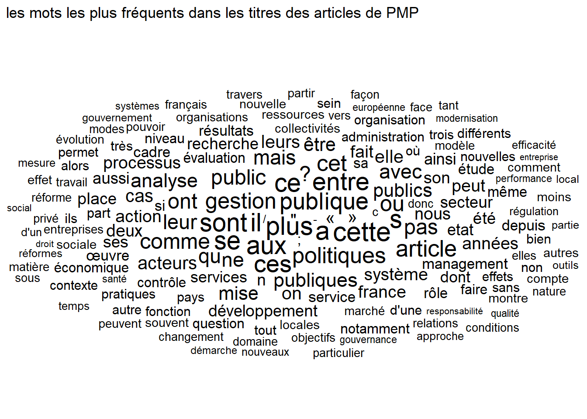

library(tidyverse) #on ne peut plus s'en passerlibrary(quanteda) # les bases du nlplibrary(quanteda.textstats)library(quanteda.textmodels)library(ggwordcloud)library(spacyr)library(readr) #lire les donneeslibrary(stringr) #manipuler le textelibrary(pals)library(ape) #pour de jolis dendogrammeslibrary(tidytext) #du nlplibrary(proustr) #un package sympa pour les dicoslibrary(mixr)library(widyr)library(igraph) #classic des reseauxlibrary(ggrepel) #gestion des labelslibrary(ggraph) library(gglorenz) #courbe de concentrationlibrary('extrafont') #c'est pour igraph# Import des fontes du système - cela peut être long#font_import()#fonts() # Liste des polices disponibles#loadfonts(device = "pdf") # Indiquer device = "pdf" pour produire un pdf theme_set(theme_minimal())
dn_year<-dn %>%group_by(Year) %>%summarise(n=n(),n_words=sum(n_words))ggplot(dn_year, aes(x=Year,y=n))+geom_smooth(method ="loess",span=.35, color="Coral2")+labs(title="Evolution du nombre d'articles par numéro",y="nombre de papier",x="Année de publication",caption="corpus PMP")+ylim(0,15)+scale_x_continuous(breaks=c(1980, 1985, 1990,1995,2000,2005,2010, 2015, 2020))+ylim(0,40)
Code
ggsave("./images/evol0.jpeg", width =27, height =18, units ="cm")
Un tournant en 2005 ? La difficulté à alimenter la revue ?
Code
ggplot(dn_year, aes(x=Year,y=n_words/n))+geom_smooth(method ="loess",span=.3,color="darkgreen")+labs(title="Evolution du nombre moyen de mots par abstract",y="nombre moyen de mots",x="Année de publication",caption="corpus PMP")
Code
ggsave("./images/evol1.jpeg", width =27, height =18, units ="cm")
[1] "Pour un contrôle des quasi-objectifs des administrations publiques. La mise en œuvre du MBO dans les organisations gouvernementales a échoué en tant que moyen d améliorer l efficacité et d obtenir de meilleurs résultats. Pour dégager la logique pratique des organisations gouvernementales, une analyse de leurs quasi-objectifs et des conditions déterminantes peut être utile. Un changement dans les résultats proviendra d un changement dans les variables d état qui déterminent les quasi-objectifs. L étude de cas de l Agence nationale française pour l emploi est donnée comme un test de la validité opérationnelle du concept de quasi-objectif dans le domaine de la gestion publique."
Code
corp <-corpus(dn$text, docvars=(dn)) # corps des auteueuttoks <-tokens(corp, padding=TRUE)dfm <-dfm(toks)#quant <- dfm_trim(dfm, min_termfreq = 1, max_termfreq= 10000)tstat_freq <-as.data.frame(textstat_frequency(dfm, n=20000) )N<-as.numeric(nrow(tstat_freq))M=sum(tstat_freq$frequency)tstat_freq2<-tstat_freq %>%mutate(idf=log(N/docfreq),tfidf=(frequency/M)*idf)%>%filter(rank>27& rank<200)set.seed(42)ggplot(tstat_freq2, aes(label = feature, size = docfreq)) +geom_text_wordcloud() +scale_size_area(max_size =8) +scale_color_discrete()+labs(title="les mots les plus fréquents dans les titres des articles de PMP")

Code
ggsave("./images/lexic1.jpeg", width =27, height =18, units ="cm")
Avec les collocations parce que ce type de langage favorise les expressions composées : par exemple “taux d’intérêt”
toks_comp <-tokens_compound(toks, pattern = tstat_col_caps) %>%tokens_select(pattern =stopwords('french'), selection ='remove')dfm <-dfm(toks_comp)tstat_freq <-as.data.frame(textstat_frequency(dfm))N<-as.numeric(nrow(tstat_freq))M=sum(tstat_freq$frequency)tstat_freq2<-tstat_freq %>%mutate(idf=log(N/docfreq),tfidf=(frequency/M)*idf)%>%filter(rank>27& rank<200)set.seed(42)ggplot(tstat_freq2, aes(label = feature, size = tfidf)) +geom_text_wordcloud() +scale_size_area(max_size =6) +scale_color_discrete()+labs(title="les mots les plus fréquents dans les titres des articles de PMP")
Code
ggsave("./images/lexic2.jpeg", width =27, height =18, units ="cm")
Par groupe (decade)
Code
quant_deca<- toks_comp %>%tokens_group(groups = decade)dfm<- quant_deca %>%dfm() %>%dfm_group(groups=decade)tstat_freq <-as.data.frame(textstat_frequency(dfm, groups = decade))N<-as.numeric(nrow(tstat_freq))M=sum(tstat_freq$frequency)tstat_freq2<-tstat_freq %>%mutate(idf=log(N/docfreq),tfidf=(frequency/M)*idf) %>%filter(tfidf>0.004& tfidf<0.0112)set.seed(42)ggplot(tstat_freq2, aes(label = feature, size = tfidf)) +geom_text_wordcloud(aes(color=tfidf)) +scale_size_area(max_size =3) +labs(title="les mots les plus fréquents dans les titres des articles de PMP")+facet_wrap(vars(group))+scale_color_gradient(low="#fb6a4a", high="#67000d")
Code
ggsave("./images/keyword0.jpeg", width =27, height =18, units ="cm")